海底牧场游记
按课文段落回读；图画帮助理解，答题仍须依据原文。
第1段
今天是我们搭乘时光机来到未来市的第三天。按照行程，我们乘游览五用车去游览海底牧场。这种五用车除了可以在天上飞、路上跑，还能爬山、航海和潜水。
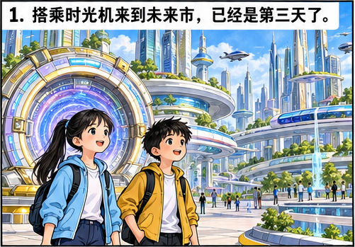
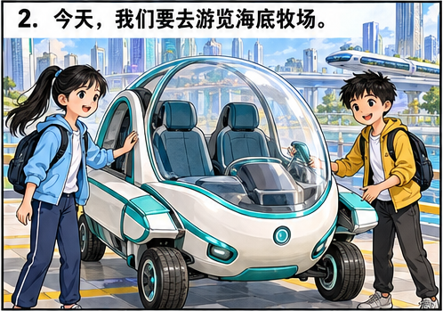
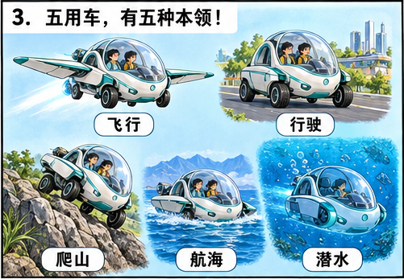
第2段
五用车腾空而起，飞向蓝蓝的海洋。从空中往下看，金色的阳光洒满海面。海面上风平浪静，像一块无边无际的玻璃。
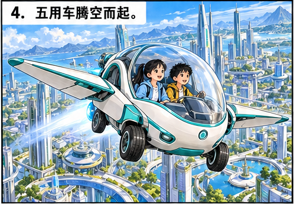
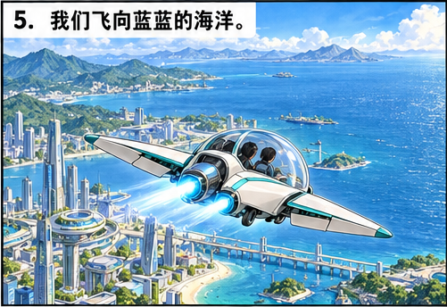
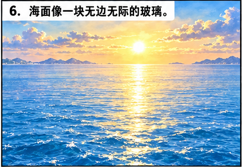
第3段
五用车越飞越低，降落在海面上，激起一阵雪白的浪花。车的翅膀自动收拢，变成一艘船，在海面上航行。
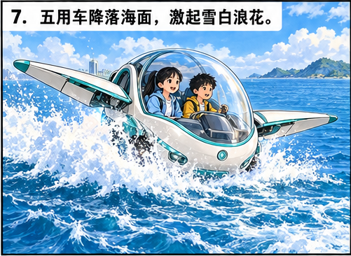
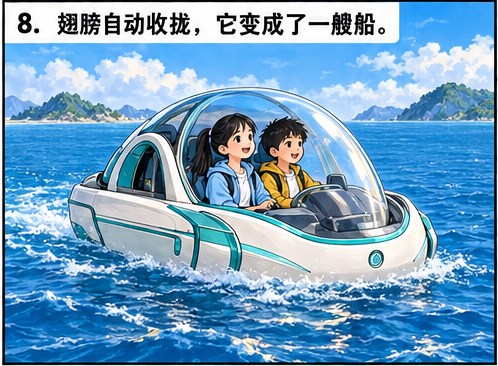
第4段
我和朋友正在说笑时，五用车屁股一翘，钻进海里，成了潜水艇。五用车的外壳是透明的，海水也是透明的。鱼儿从容地从我眼前游过，虾儿悄悄地从我身边溜走，我仿佛来到了水晶宫。我们正悠然自得地欣赏着迷人的美景，一条大白鲨突然向我们发动袭击！它张开血盆大口，使劲儿一咬，五用车震了一下！大白鲨断了一颗牙齿，五用车却安然无恙。这家伙欺软怕硬，咬不动五用车，就尾巴一扫，闪电般地溜走了。
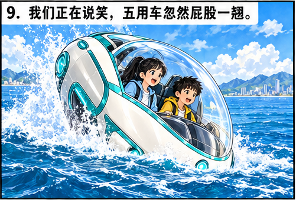
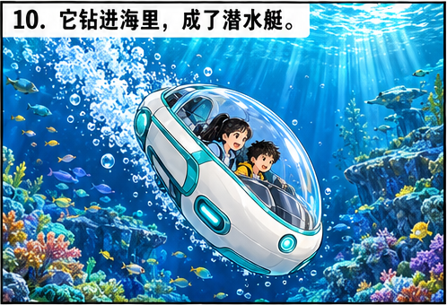
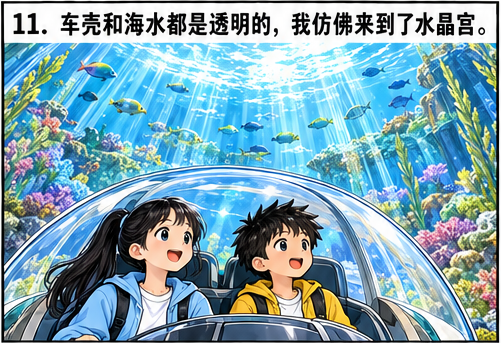
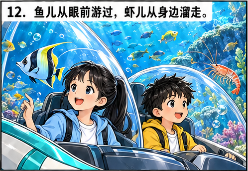
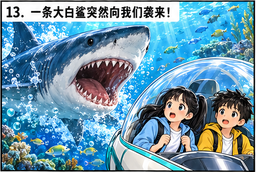
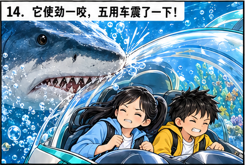
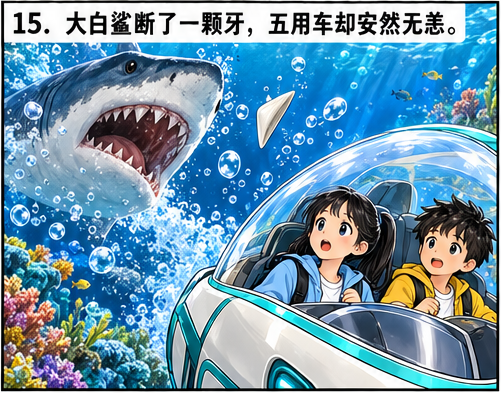
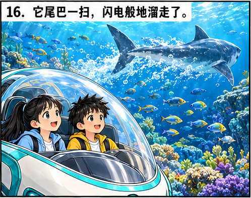
第5段
五用车慢慢下降，停在海底草原——这儿是浅海。阳光透过海水，淡淡地照着海底。海底平展展的，长满了海草、海带，就好像来到一马平川的大草原。草原上怎么没有牛羊？我正疑惑着，忽然看到远处有些黑影。靠近一些，我才发现原来是一个机器人正在放牧牛羊。那些牛羊看到五用车不但不怕，反而都跑了过来，确切地讲，是游了过来。它们挤在车子周围，好奇地打量着我们。有的甚至跳到五用车上面，“站”在我们的头顶上。
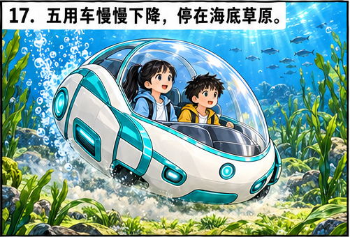
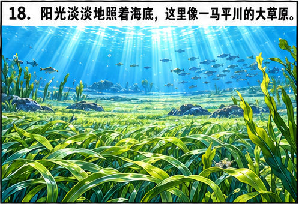
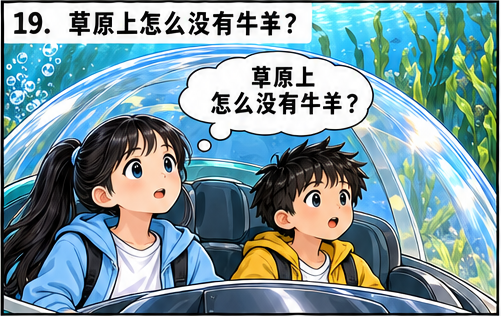
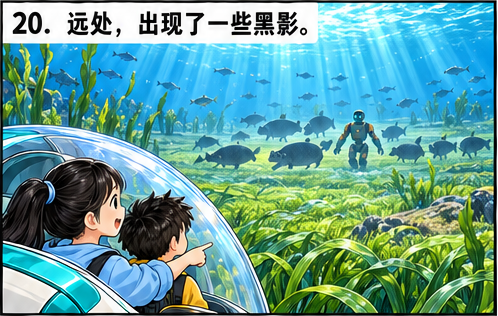
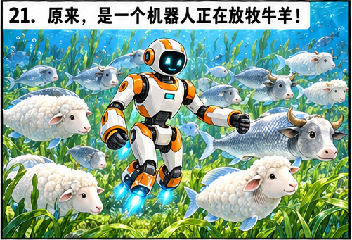
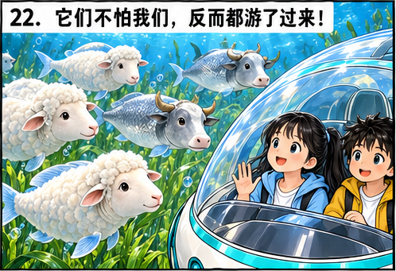
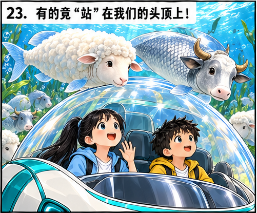
第6段
我仔细一看，好一副古怪的长相：那羊，虽然浑身长着白色的羊毛，却没有脚，还长着鱼鳍和鱼尾巴。那牛就更怪了，长着牛头，却浑身披着银闪闪的鱼鳞。它们也没有脚，同样长着鱼尾巴。朋友告诉我，我才知道，这些动物就是“羊鱼”和“牛鱼”。科学家在鱼的细胞中加进羊或牛的基因，这么一来，它们就能够像鱼那样用鳃呼吸，在海里生活，还能为我们提供羊肉、牛肉、羊毛、牛奶呢！
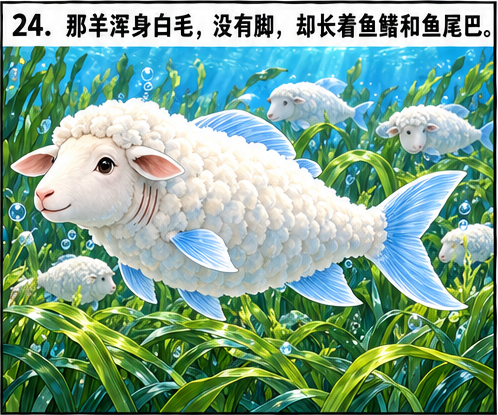
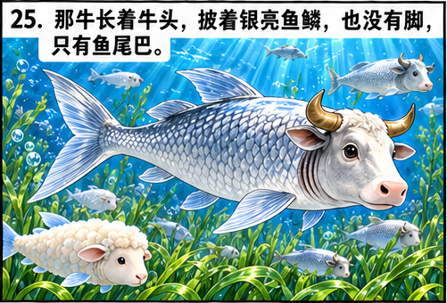
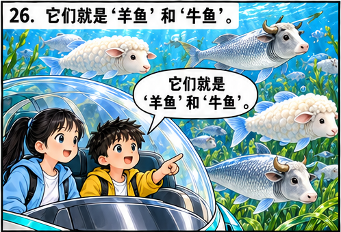
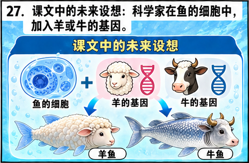
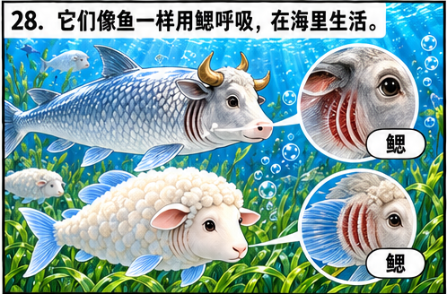
第7段
我想看得更清楚些，就把所有的灯都打开。没想到，明亮的灯光把它们吓跑了。它们一哄而散，都不见了！机器人快速地来到车前。它跟我们比着手势，车中传来它的声音：“请立即关灯。未来市市政府颁布了法令，不得扰乱海底牧场。谢谢！”我连忙把灯关上。
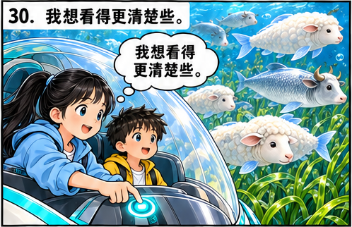
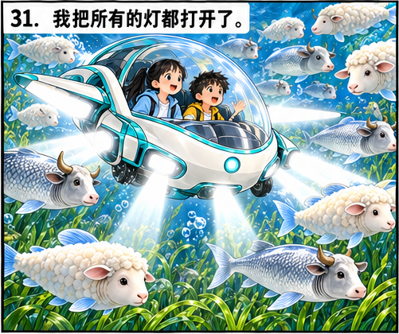
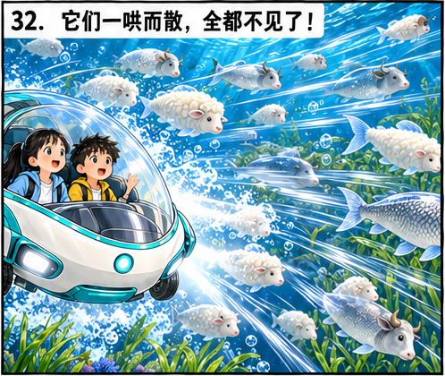
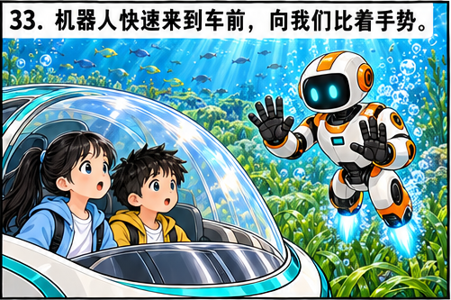
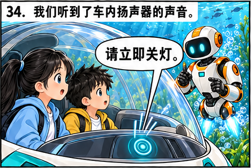
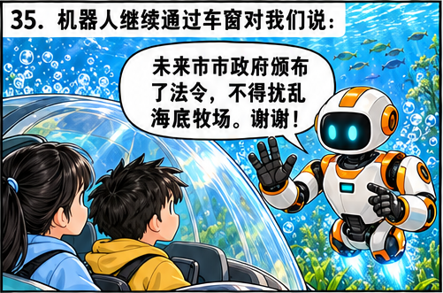
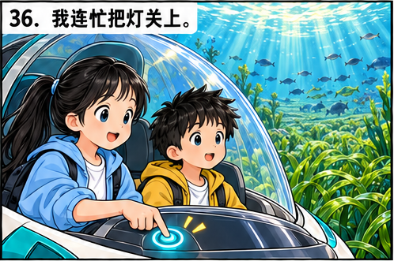
第8段
我们在海底牧场又逛了几个小时。海底牧场景色优美，让我们流连忘返。
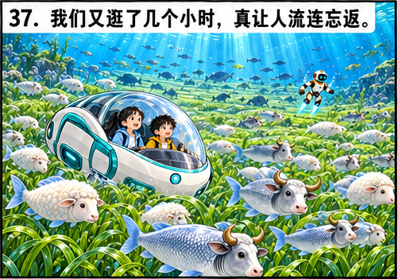
第9段
当五用车钻出海面时，海上正好起风，大风掀起巨浪，蓝色的海面上泛起了白花花的泡沫。真难以想象，海底却是那样一个宁静的世界！
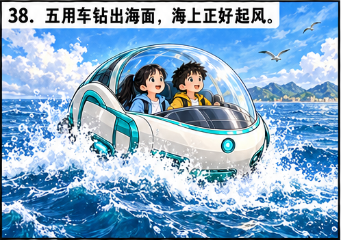
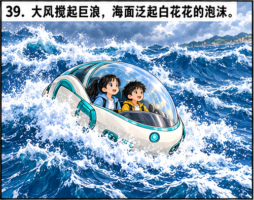
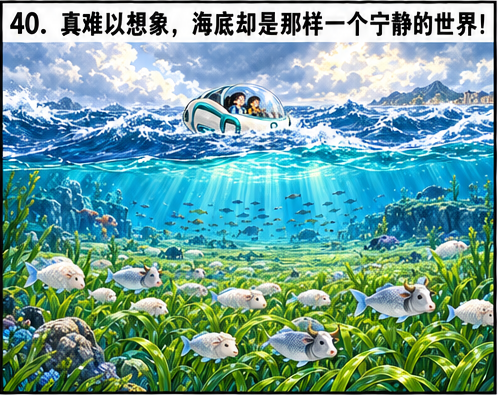
查看五页完整原漫画
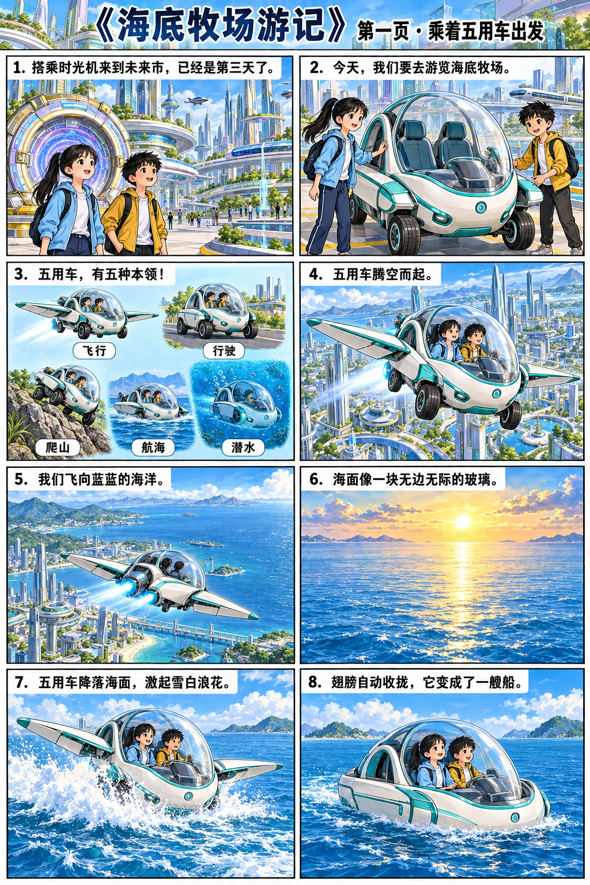
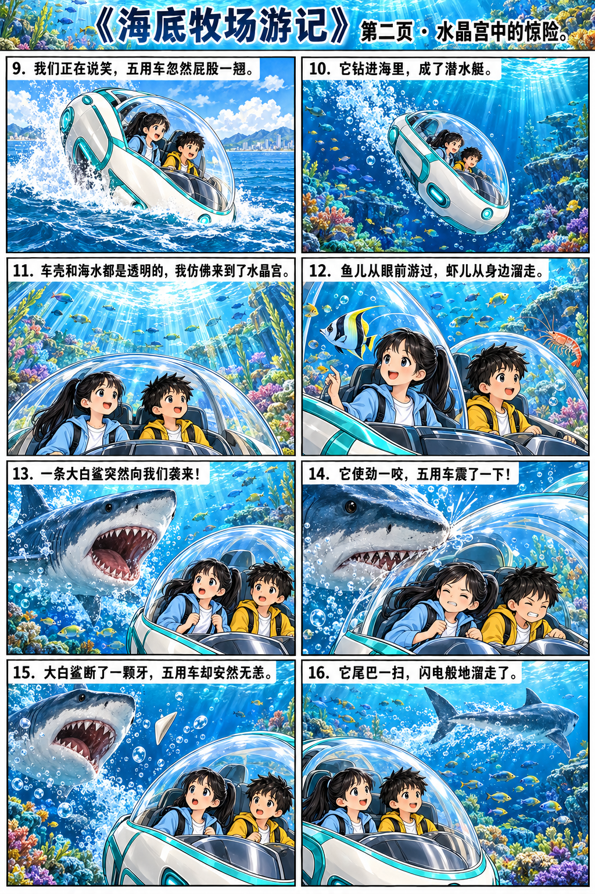
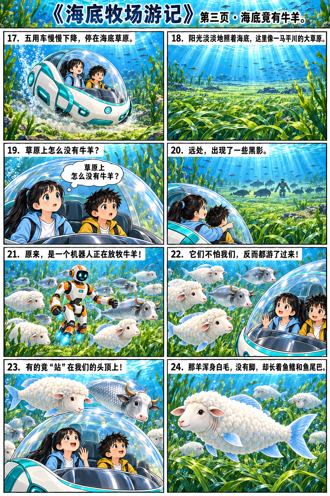
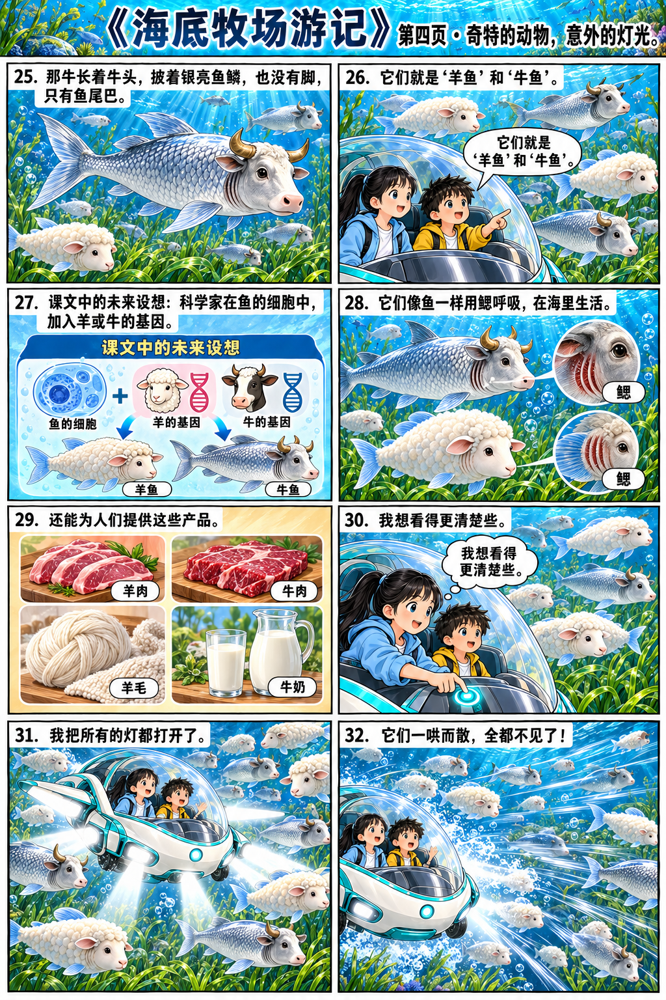
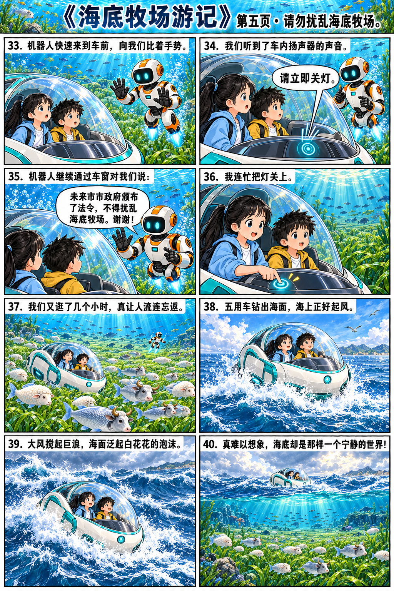